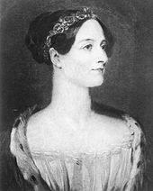
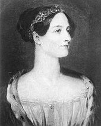

Deze pagina gaat over Ada Lovelace. Zij wordt nu gezien als de ontwerpster van het eerste computerprogramma, omdat ze "programma's" schreef om symbolen volgens vaste regels te manipuleren die Charles Babbage, degene waarmee ze samenwerkte, op dat moment nog moest maken
 
